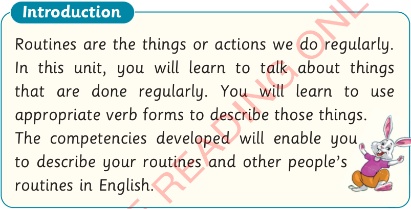
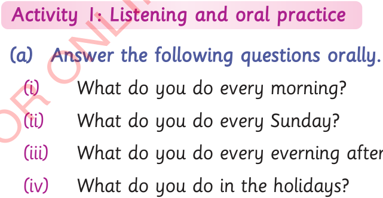

Unit Four
Describing routines
Introduction
Routines are the things or actions we do regularly.
In this unit, you will learn to talk about things that are done regularly.
You will learn to use appropriate verb forms to describe those things.
The competencies developed will enable you to describe your routines and other people’s routines in English.

Activity 1: Listening and oral practice
(a)
Answer the following questions orally.
(i)
What do you do every morning?
(ii)
What do you do every Sunday?
(iii)
What do you do every everning after dinner?
(iv)
What do you do in the holidays?

29